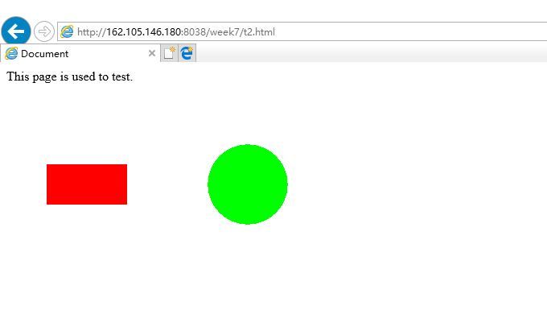
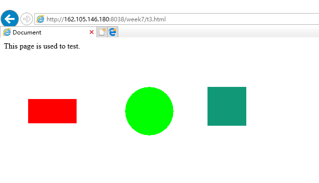

1、Research by loading these files on as many different browser types and versions as you can find (e.g. IE, Opera, Safari and Mozilla family). Snapshot what happens and include these images on your web site.
答：现在的浏览器几乎都不再支持applet，比如chrome,firefox。在我的试验中，只有ie可以显示内容
hello world!第二题：
 click here第三题：
 click here4、Write a brief ( <200 words) essay outlining the differences between AWT and Swing graphics. You may find it useful to visit the Java website.
答：AWT 是抽象窗口组件道具包，Swing 是为了解决 AWT 存在的难点而新DEV的包，它以 AWT 为基础的。当我们利用 AWT 来构件图形用户界面的时候，我们实际上是在利用操作系统所提供的图形库。由于不同操作系统的图形库所提供的功能是不一样的，在一个平台上存在的功能在另外一个平台上则可能不存在。Swing 是在AWT的基础上构建的一套新的图形界面系统，它提供了AWT 所能够提供的所有功能，并且用纯粹的Java代码对AWT 的功能进行了大幅度的扩充。